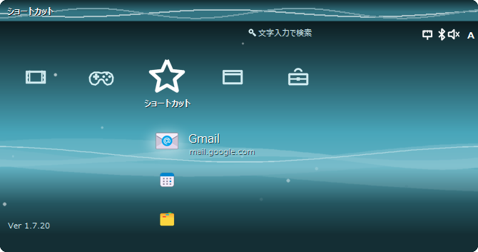
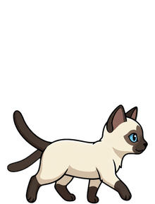
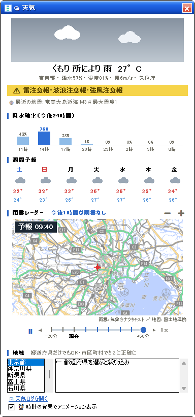

Windows Launcher · ShortcutBar
画面の端に、 ぜんぶある。
アプリ起動・ウィンドウ切替・検索・電卓・天気。散らばっていた道具を、細いバー1本に寄せました。見た目はワンクリックで着せ替え。
- Windows 10 / 11
- インストール不要・exe 1つ
- 無料版に期限なし
GitHub Releases で配布中


クラシック（青）— スタートメニュー付き
01 — Work
探す時間を、
減らす。
タスクバー、スタートメニュー、電卓、天気サイト。行ったり来たりしていた場所を、いつも見えている画面の端にまとめます。
並べて、1クリックで開く
アプリ・ファイル・フォルダ・URLを1枚のタイルに。アイコンは実物から自動で拾います。
- ファイルやフォルダはバーへドラッグするだけ
- 仕事用・在宅用など「作業セット」を丸ごと切替
開いている窓が、いつも見える
起動中のウィンドウが縦に並び、クリックで前面へ。マウスを乗せると中身がライブで浮かびます。
- 行の📷でその窓だけをスクショ
- 行を放り投げると左右半分・最大化にスナップ
1本の欄で、検索も計算も
アプリ・フォルダ・Webを横断検索。式を打てば電卓、単位を打てば換算になります。
- Ctrl+Alt+Space でどこからでも呼び出し
- クリップボード履歴・付箋もバーの中に
設備屋の単位、そのまま
呼び径 B⇔A の早見表、圧力・流量・面積・熱量の換算。設備・建築の現場で毎日使う数字を入れました。
- 1/2B ⇔ 15A・kPa ⇔ mmAq・m³/h ⇔ L/min
- 坪 ⇔ ㎡・kW ⇔ kcal/h
Try it here
アプリの検索欄を、ここで試せます
換算の表はアプリ本体と同じ物を使っています。（例: 1/2B・25A・10kPa・20坪・3980*1.1）

02 — Weather & Safety
傘の判断は、
ブラウザなしで。
数値の出どころは気象庁。雨雲レーダーは60分先までアニメで再生できるので「あと何分で降るか」が読めます。
- ☂24時間の降水確率グラフと週間予報、時間ごとの気温・風
- 🛰雨雲レーダー：直近の実況＋60分先の予報、コマ送り・拡大縮小
- ⚠警報・注意報・地震・津波をひと目で。雨雲が近づくと相棒が知らせます
- 📍地域は 都道府県 → 市区町村 を選ぶだけ。地名の入力は要りません
出典: 気象庁（予報・警報・地震・雨雲ナウキャスト）／地図: 国土地理院
03 — Themes
道具は、気に入った
見た目で使う。
ミニマルから、懐かしの青いクラシック、レトロ携帯機風のホーム画面まで。切り替えに再起動は要りません。下の画像はすべて実際の画面です。
04 — Buddy
デスクトップに、
相棒がすみつく。
画面の中を小さな相棒が歩きます。標準はイルカの「フィン」。きせかえで、作者の家のシャム猫「めめ」にも。あなたのペットの写真1枚からも作れます。
ファイルを運ぶ
ドラッグして渡すと、ゴミ箱まで運んでくれます。
雨を知らせる
雨雲が近づくと「傘の準備を！」。リマインダーやポモドーロも。
うちの子きせかえ
ペットの写真から相棒を作れます。1枚でも動きます（無いポーズは合成）。
↑ 本物の めめ。押すとしゃべります
05 — Truck Simulator
走って貯めて、
Pro版を40%OFF。
バーの中に、日本地図を走る小さな運送会社があります。窓を閉じていてもバーが起きていれば走り続け、貯めたコインはPro版の割引コードに換えられます。
ここに（無料）
ソフト・お店も
🎟 100,000 コインで交換。🔧 ガレージの「券」の棚から
🎟 250,000 コインで交換。買うと割引コード入りの購入ページがその場で開きます
作者の実測。各コード 先着30名・2026年12月10日まで
主要51都市・実在ルートの日本地図／運転席・後方・地図の3視点の3D／未回収のコインは12時間ぶんまで。くわしく →
06 — Billboard
高速道路の看板に、
あなたの広告を。いま無料
トラックシミュレーターの本線ぞいの看板は、クリックでリンク先が開き、ときどき画面いっぱいに大写しになります。走らせている間ずっと目に入る、ゲーム内の広告枠です。
メールが開きます。返事は1〜2日以内
- 掲載料はいま無料利用者数がまだ少なく、広告費をいただけるだけの数字が出ていないためです。有料にするときは事前にご連絡します。相互紹介も歓迎。
- 送るのは画像とリンクだけ横長4:1くらいのPNG/JPG（400KB以下）と、https で始まるリンク先。文字だけの看板（60文字まで）もOK。
- 最大12枚・1日1回の更新全員のアプリに反映されます。個人開発のソフト、創作物、お店やサービスなど。
広告SDKもトラッキングも入っていません。アプリは1日1回この配信ファイルを読むだけで、こちらから送るデータはありません。利用者は 🚚の窓 →「🖼看板」からスポンサー看板をOFFにできます。
お断りする場合: 公序良俗に反するもの・出会い系・投資勧誘・アダルト・他社の商標やロゴを無断で使ったもの。
07 — Pricing
無料でずっと。
Proは買い切り。
標準機能は無料のまま期限なし。気に入ったら ¥980 で全部解放。サブスクはありません。
無料版 FREE
- ランチャー・横断検索・電卓・単位換算
- 起動中アプリ一覧・覗き窓・窓投げ・スクショ
- 天気・雨雲レーダー・警報・地震
- クリップボード履歴・付箋・作業ログ
- 着せ替え（ミニマル／クラシック）・相棒・トラックシミュレーター
初回から14日間は Pro機能もすべてお試しできます
Pro版 PRO
- 壁紙モード（好きな画像をバー全面に・文字カスタム）
- PiP監視（小窓でライブ表示・そのまま操作）
- シークレットメモ（暗号化・30秒で自動消去）
- レトロ携帯機風テーマを無制限・時計の書体と色
- カスタムカテゴリ無制限・相棒2匹まで
購入後、登録メールにプロダクトキーが自動で届きます。PC買い替えも同じキーで再認証OK・30日以内は返金に応じます
| 機能 | 無料 | Pro |
|---|---|---|
| ランチャー・検索・電卓・単位換算・クリップボード履歴・スクショ | ✓ | ✓ |
| 天気・防災（週間予報・雨雲レーダー・警報・地震）・時計の空アニメ | ✓ | ✓ |
| 着せ替え: ミニマル／クラシック（青）・相棒・覗き窓・重力モード | ✓ | ✓ |
| 🚚 トラックシミュレーター | ✓ | ✓ |
| 着せ替え: レトロ携帯機風 | 5日間の体験 | 無制限 |
| カスタムカテゴリ（自分専用の列） | 1つまで | 無制限 |
| PiP監視（実映像・クリック転送・見張り） | — | ✓ |
| 壁紙モード | — | ✓ |
| シークレットメモ | — | ✓ |
| 時計の書体・カスタム色 | — | ✓ |
⚠ 本アプリは Windows 10 / 11 専用です。Mac・スマホでは動きません。ご購入前にお使いのPCをご確認ください。
08 — Start
はじめかたは、
3ステップ。
インストーラーはありません。exe を開くだけで、画面の端に住みつきます。
ダウンロードして開く
ShortcutBar.exeをダブルクリック。画面の端に小さなバーが現れます。SmartScreen が出たら「詳細情報」→「実行」。よく使うものを登録
バーを右クリック →「📌ショートカットを追加」。アプリ名を打つと候補が出て、名前もアイコンも自動で入ります。
タスクバーの代わりに
⚙設定 → 配置 →「画面端に固定」。Windows のタスクバーを自動で隠す設定にすれば、画面が広々。
迷ったら、まずバーを右クリック。使える機能がメニューにまとまっています。
09 — FAQ
よくある質問
Macやスマホで使えますか？
いいえ。Windows 10 / 11 専用です。Mac・Linux・スマートフォン（iPhone / Android）では動きません。
本当に無料で使えますか？
はい。標準機能は無料で、期限もありません。天気・雨雲レーダーも無料です。レトロ携帯機風テーマのみ、無料版では5日間の体験期間があります（ミニマル・クラシックはずっと無料）。
インストールは必要ですか？
不要です。exe をダウンロードしてダブルクリックするだけ。必要な実行ライブラリは同梱済みです。設定はユーザーフォルダの中の1ファイルだけなので、いらなくなったら消すだけで消えます。
SmartScreenの警告が出ます
個人開発でコード署名をしていないために出る表示です。「詳細情報」→「実行」で起動できます。
おすすめの使い方は？
作者のおすすめは、Windows 標準のタスクバーを隠して、ショートカットバーをタスクバー代わりにする使い方です。
- バーの ⚙設定 → 配置 →「画面端に固定」で好きな画面端にドッキング
- Windows の 設定 → 個人用設定 → タスクバー →「タスクバーを自動的に隠す」をON
天気のデータはどこから？
日本国内は気象庁の公開データ（予報・警報・地震・雨雲ナウキャスト）、雨雲レーダーの地図は国土地理院のタイルです。海外の地点は Open-Meteo を使います。
PCを買い替えたらキーは？
同じメールアドレスとキーでそのまま再認証できます。回数制限はありません。
割引はありますか？
あります。アプリ内の 🚚 トラックシミュレーター（無料）で貯めたコインを、🔧 ガレージの「券」の棚で Pro版の割引コードに換えられます。20%OFF（¥784）は100,000コイン、40%OFF（¥588）は250,000コイン。各コード先着30名・2026年12月10日まで。コインは1日でおよそ5,000貯まります（作者の実測）。
自分のソフトやお店の広告を出せますか？
出せます。トラックシミュレーターの高速道路ぞいの看板に、横長の画像＋https のリンク先（または文字だけ）を載せられます。いまは掲載料無料・最大12枚。看板枠からどうぞ。
支払い方法は？
Stripe の購入ページで決済します。使える支払い方法は購入ページに表示されます。カード情報が開発者に渡ることはありません。
データは外に送られますか？
使用状況の共有（テレメトリ）は、同意した場合だけ匿名で送ります。ファイル名・パス・クリップボード・メモの中身・ウィンドウのタイトルは送りません。くわしくはプライバシーポリシーへ。